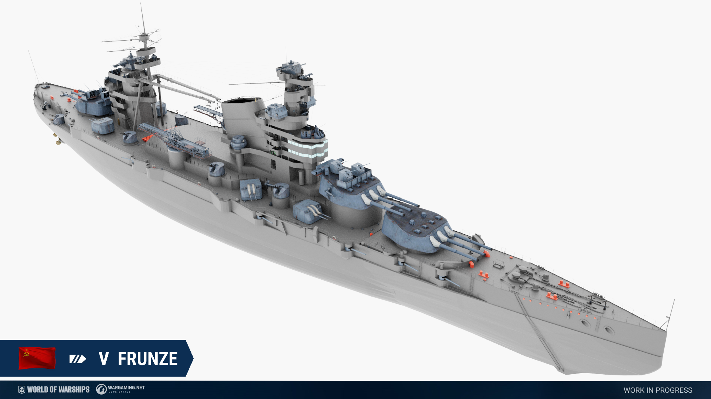
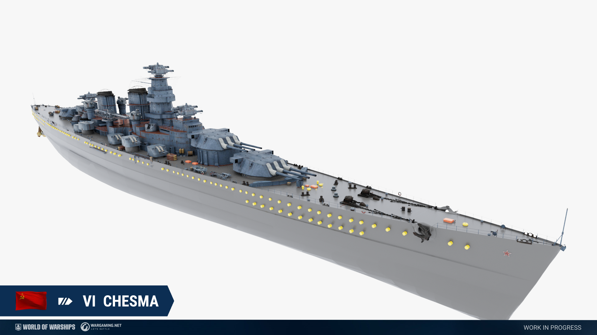
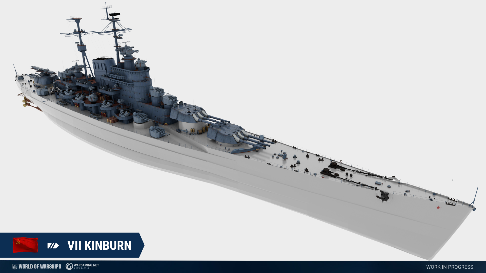
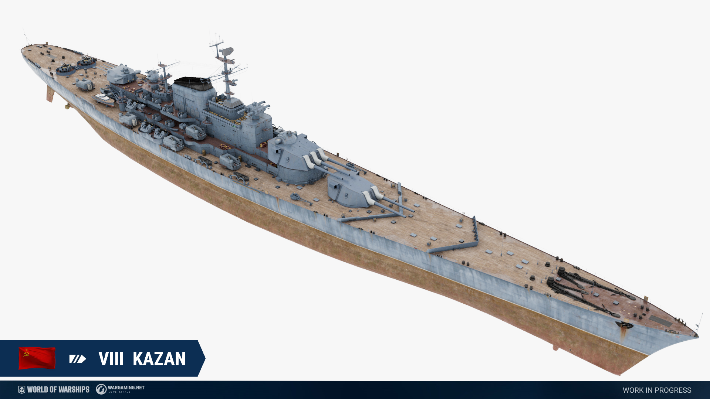
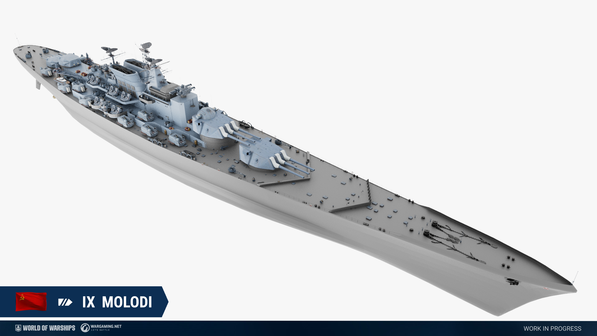
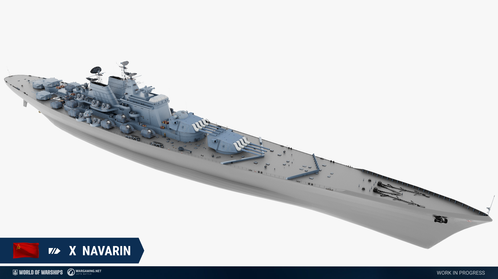
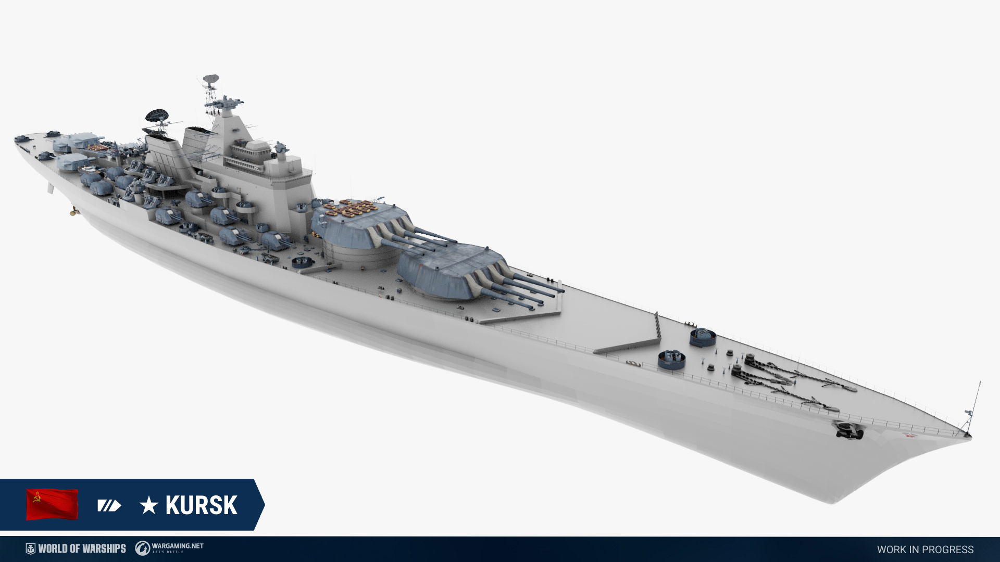
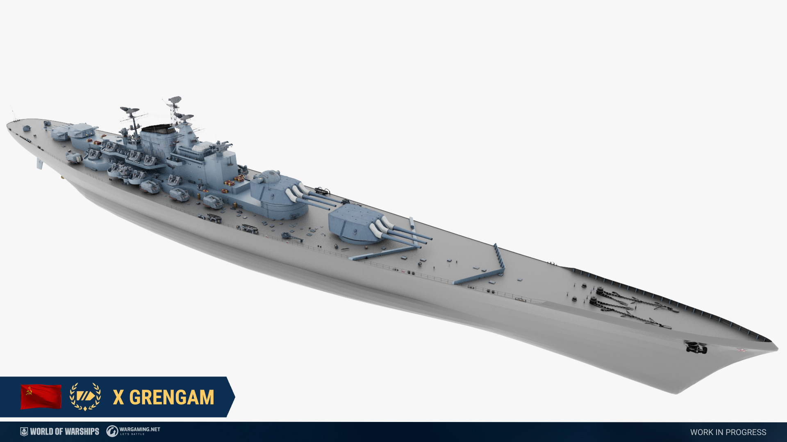

A second branch of Soviet Battleships will be added to the game in one of the future updates. We're ready to share the first details.
In the current concept, these newcomers excel at mid-range, thanks to an accurate main battery with mediocre range and powerful secondary armament with improved range and increasingly improved accuracy at higher tiers, with Tier X battleship Navarin having a dispersion formula similar to that found on Tier X Italian cruiser Napoli.
The ships in the branch are equipped with the Fighter consumable at Tiers V-VII, which will be replaced on Tier VIII and onwards by Defensive AA Fire. The main battery guns of the new battlecruisers have superb accuracy, good penetration but lackluster range, which forces ships into a more active role. Starting from Tier VIII, these ships have their entire main battery located at the front and an increasing number of secondary guns. The secondary guns have increased penetration and excellent firing angles, allowing some to even shoot over their own superstructure to attack enemy vessels.
Key characteristics of the ships will be high speed but poor maneuverability, an armor scheme that allows great protection when angled well, but will prove insufficient under heavy fire due to mediocre health. This will put emphasis on good positioning, as these vessels will fail to quickly reposition and become vulnerable while doing so. The ships boasts strong torpedo protection and powerful long range anti aircraft armament, among the best of their class.
Unlike the other branches of battlecruisers that have been introduced so far, the Soviet battlecruisers will not have access to torpedoes.
Lastly, these vessels will have access to the same Fast Damage Control Team found on the existing Russian Battleships, but will have unlimited charges. Additionally, the Soviet battlecruisers will receive a special “Heavy Repair Teams“ consumable similar to that found on Sevastopol, with long duration, but low damage recovery and very long reload.
Soviet Battleship Frunze, Tier V

A proposal dating back to 1933 for a radical modernization of the Gangut-class battleship Poltava, which had been heavily damaged by a fire in 1919 and had been renamed to Frunze. The modernization would have been similar to that of the Italian battleships of the Conte di Cavour and Caio Duilio-class. The project was canceled in 1935 due to a lack of capacity in the young Soviet shipbuilding industry.
Soviet Battleship Frunze, Tier V
Hit points – 45300. Plating - 19 mm.
Main battery - 3x3 305 mm. Firing range - 16.8 km.
Maximum HE shell damage – 4500. HE shell armor penetration - 51 mm. Chance to cause fire
– 33%. HE initial velocity - 762 m/s.
Maximum AP shell damage - 8600. AP initial velocity - 762 m/s.
Reload time - 30.0 s. 180 degree turn time - 55.0 s. Maximum dispersion - 279 m. Sigma –
1.80.
Airstrike (DC):
Reload time - 30.0 s. Available flights - 1. Number of Aircraft in Attacking Flight - 1.
Maximum range - 6.0 km. Number of Bombs in Payload - 2. Maximum bomb damage -
3400.0.
Secondary Armament:
6x2 130.0 mm, range 5.0 km.
Maximum HE shell damage – 1800. Chance to cause fire – 5%. HE initial velocity - 900
m/s
10x1 130.0 mm, range - 5.0 km.
Maximum HE shell damage – 1800. Chance to cause fire – 9%. HE initial velocity - 900
m/s
AA defense: 6x1 12.0 mm., 2x8 12.0 mm., 5x1 37.0 mm., 8x2 37.0 mm., 6x1 76 mm.
AA defense short-range: continuous damage per second - 189, hit probability - 75 %,
action zone - 1.5 km;
AA defense mid-range: continuous damage per second - 70, hit probability - 75 %, action
zone - 3.5 km;
Maximum speed - 27.5 kt. Turning circle radius - 650 m. Rudder shift time – 12.6 s.
Surface detectability – 11.9 km. Air detectability – 7.8 km. Detectability after firing
main guns in smoke – 9.5 km.
Available consumables:
- 1 slot - Fast Damage Control Team
- 2 slot - Heavy Repair Teams
- 3 slot - Fighter
All stats are listed without crew and upgrade modifiers but with best available modules. The stats are subject to change during the testing.
Soviet Battleship Chesma, Tier VI

A design for a small B-type Battleship (Project 25) designed to counter heavy cruisers, German pocket-battleships and the Scharnhorst-class battleships which were under construction at the time. The project was canceled in 1937 in favor of working on project 23, the Sovetsky Soyus class, but the concept reappeared with the arrival of the Kronstadt-class large cruisers.
The vessel is named after the battle of Chesma, one of the largest naval victories of the Russian navy. It greatly reduced the power of the Ottoman navy and secured Russian dominance in the Black sea and even the Aegean sea.
Soviet Battleship Chesma, Tier VI
Hit points – 54700. Plating - 25 mm.
Main battery - 3x3 305 mm. Firing range - 17.2 km.
Maximum HE shell damage – 4500. HE shell armor penetration - 64 mm. Chance to cause fire
– 33%. HE initial velocity - 850 m/s.
Maximum AP shell damage - 9000. AP initial velocity - 850 m/s.
Reload time - 30.0 s. 180 degree turn time - 45.0 s. Maximum dispersion - 278 m. Sigma –
1.90.
Airstrike (DC):
Reload time - 30.0 s. Available flights - 2. Number of Aircraft in Attacking Flight - 1.
Maximum range - 8.0 km. Number of Bombs in Payload - 2. Maximum bomb damage -
3400.0.
Secondary Armament:
11x2 130.0 mm, range 5.6 km.
Maximum HE shell damage – 1800. Chance to cause fire – 9%. HE initial velocity - 900
m/s
AA defense: 6x4 37.0 mm., 11x2 130 mm.
AA defense mid-range: continuous damage per second - 189, hit probability - 85 %, action
zone - 3.5 km;
AA defense long-range: continuous damage per second - 120, hit probability - 85 %,
action zone - 5.8 km;
Number of explosions in a salvo - 5, damage within an explosion - 1400, action zone 3.5
- 5.8 km.
Maximum speed - 27.9 kt. Turning circle radius - 980 m. Rudder shift time – 14.0 s.
Surface detectability – 12.1 km. Air detectability – 8.2 km. Detectability after firing
main guns in smoke – 9.2 km.
Available consumables:
- 1 slot - Fast Damage Control Team
- 2 slot - Heavy Repair Teams
- 3 slot - Fighter
All stats are listed without crew and upgrade modifiers but with best available modules. The stats are subject to change during the testing.
Soviet Battleship Kinburn, Tier VII

A design for a potential completion of the Izmail-class battlecruiser Kinburn in a similar fashion as had been proposed for Frunze. The ship is presented with a potential post-WWII retrofit. Historically, no plan like this was ever brought forward, but until the early 1930s, various ideas of completing one of the Izmail-class battlecruisers were tossed around, and its reasonable to assume that with a more advanced shipbuilding industry, the Soviet navy could have tried to complete such a large vessel in the late 1920s and early 30s.
Soviet Battleship Kinburn, Tier VII
Hit points – 57100. Plating - 25 mm.
Main battery - 3x3 356 mm. Firing range - 17.5 km.
Maximum HE shell damage – 5200. HE shell armor penetration - 64 mm. Chance to cause fire
– 34%. HE initial velocity - 800 m/s.
Maximum AP shell damage - 10500. AP initial velocity - 800 m/s.
Reload time - 33.0 s. 180 degree turn time - 60.0 s. Maximum dispersion - 285 m. Sigma –
1.90.
Airstrike (DC):
Reload time - 33.0 s. Available flights - 2. Number of Aircraft in Attacking Flight - 1.
Maximum range - 8.0 km. Number of Bombs in Payload - 2. Maximum bomb damage -
4200.0.
Secondary Armament:
9x2 130.0 mm, range 6.3 km.
Maximum HE shell damage – 1800. Chance to cause fire – 8%. HE initial velocity - 950
m/s
AA defense: 12x4 25.0 mm., 10x4 45.0 mm., 9x2 130 mm.
AA defense short-range: continuous damage per second - 205, hit probability - 70 %,
action zone - 1.5 km;
AA defense mid-range: continuous damage per second - 254, hit probability - 75 %, action
zone - 3.5 km;
AA defense long-range: continuous damage per second - 144, hit probability - 75 %,
action zone - 6.0 km;
Number of explosions in a salvo - 6, damage within an explosion - 1400, action zone 3.5
- 6.0 km.
Maximum speed - 30.0 kt. Turning circle radius - 940 m. Rudder shift time – 14.5 s.
Surface detectability – 14.2 km. Air detectability – 9.2 km. Detectability after firing
main guns in smoke – 11.3 km.
Available consumables:
- 1 slot - Fast Damage Control Team
- 2 slot - Heavy Repair Teams
- 3 slot - Fighter
All stats are listed without crew and upgrade modifiers but with best available modules. The stats are subject to change during the testing.
Soviet Battleship Kazan, Tier VIII

Based on a design for a “small battleship“ that was developed in the post-war period. The ship is presented with an enhanced secondary battery. Kazan is named after the Battle of Kazan (1774) which was part of the Pugachev rebellion against the Russian Tzars. The Battle of Kazan saw widespread use within Soviet propaganda, making it a possible name for a new Soviet Battleship.
Soviet Battleship Kazan, Tier VIII
Hit points – 58400. Plating - 27 mm.
Main battery - 1x3 & 1x2 406 mm. Firing range - 17.8 km.
Maximum HE shell damage – 5800. HE shell armor penetration - 68 mm. Chance to cause fire
– 40%. HE initial velocity - 830 m/s.
Maximum AP shell damage - 13250. AP initial velocity - 830 m/s.
Reload time - 35.0 s. 180 degree turn time - 40.0 s. Maximum dispersion - 215 m. Sigma –
2.00.
Airstrike (DC):
Reload time - 30.0 s. Available flights - 2. Number of Aircraft in Attacking Flight - 1.
Maximum range - 10.0 km. Number of Bombs in Payload - 2. Maximum bomb damage -
4200.0.
Secondary Armament:
10x2 130.0 mm, range 7.7 km.
Maximum HE shell damage – 1400. Chance to cause fire – 6%. HE initial velocity - 1000
m/s
1x4 180.0 mm, range 7.7 km.
Maximum HE shell damage – 2500. Chance to cause fire – 11%. HE initial velocity - 1000
m/s
AA defense: 12x4 25.0 mm., 8x4 57.0 mm., 9x2 130 mm., 1x4 180.0 mm.
AA defense short-range: continuous damage per second - 306, hit probability - 90 %,
action zone - 3.5 km;
AA defense mid-range: continuous damage per second - 230, hit probability - 80 %, action
zone - 5.8 km;
AA defense long-range: continuous damage per second - 82, hit probability - 50 %, action
zone - 6.9 km;
Number of explosions in a salvo - 7, damage within an explosion - 1680, action zone 3.5
- 6.9 km.
Maximum speed - 33.5 kt. Turning circle radius - 1040 m. Rudder shift time – 15.4 s.
Surface detectability – 15.8 km. Air detectability – 9.9 km. Detectability after firing
main guns in smoke – 12.4 km.
Available consumables:
- 1 slot - Fast Damage Control Team
- 2 slot - Heavy Repair Teams
- 3 slot - Defensive AA Fire
All stats are listed without crew and upgrade modifiers but with best available modules. The stats are subject to change during the testing.
Soviet Battleship Molodi, Tier IX

An enlarged version of the”small battleship“ concept designed to counter NATO battleships present during the 1950s and 60s. Compared to her prototype she features enlarged dimensions and heavy anti aircraft-artillery.
The ship is named after the battle of Molodi of 1572.
Soviet Battleship Molodi, Tier IX
Hit points – 75200. Plating - 30 mm.
Main battery - 2x3 406 mm. Firing range - 17.8 km.
Maximum HE shell damage – 5800. HE shell armor penetration - 68 mm. Chance to cause fire
– 40%. HE initial velocity - 830 m/s.
Maximum AP shell damage - 13250. AP initial velocity - 830 m/s.
Reload time - 35.0 s. 180 degree turn time - 40.0 s. Maximum dispersion - 215 m. Sigma –
2.00.
Airstrike (DC):
Reload time - 30.0 s. Available flights - 3. Number of Aircraft in Attacking Flight - 1.
Maximum range - 10.0 km. Number of Bombs in Payload - 2. Maximum bomb damage -
4200.0.
Secondary Armament:
15x2 130.0 mm, range 8.0 km.
Maximum HE shell damage – 1400. Chance to cause fire – 6%. HE initial velocity - 1000
m/s
2x4 180.0 mm, range 8.0 km.
Maximum HE shell damage – 2500. Chance to cause fire – 11%. HE initial velocity - 1000
m/s
AA defense: 18x1 20.0 mm., 16x4 25.0 mm., 10x4 57.0 mm., 15x2 130 mm., 2x4 180.0
mm.
AA defense short-range: continuous damage per second - 405, hit probability - 95 %,
action zone - 3.5 km;
AA defense mid-range: continuous damage per second - 345, hit probability - 85 %, action
zone - 5.8 km;
AA defense long-range: continuous damage per second - 161, hit probability - 55 %,
action zone - 6.9 km;
Number of explosions in a salvo - 12, damage within an explosion - 1890, action zone 3.5
- 6.9 km.
Maximum speed - 35.5 kt. Turning circle radius - 1080 m. Rudder shift time – 16.5 s.
Surface detectability – 16.2 km. Air detectability – 10.5 km. Detectability after firing
main guns in smoke – 13.6 km.
Available consumables:
- 1 slot - Fast Damage Control Team
- 2 slot - Heavy Repair Teams
- 3 slot - Defensive AA Fire
All stats are listed without crew and upgrade modifiers but with best available modules. The stats are subject to change during the testing.
Soviet Battleship Navarin, Tier X

A hypothetical battleship based on the “small battleship” concept designed to counter possible cold-war era super-battleships of the NATO-fleet. Navarin features 406mm guns based in quadruple turrets, a design that was first developed during World War 1 and could have been picked up again by Soviet designers in a scenario where battleships had stayed relevant during the cold war.
The ship is named after the Battle of Navarin of 1827, during which a combined Russian, British and French fleet utterly defeated an Ottoman-Egyptian fleet. To this day, it’s considered among the most important naval battles in Russian history.
Soviet Battleship Navarin, Tier X
Hit points – 81100. Plating - 32 mm.
Main battery - 2x4 406 mm. Firing range - 18.2 km.
Maximum HE shell damage – 5800. HE shell armor penetration - 68 mm. Chance to cause fire
– 40%. HE initial velocity - 830 m/s.
Maximum AP shell damage - 13250. AP initial velocity - 830 m/s.
Reload time - 35.0 s. 180 degree turn time - 45.0 s. Maximum dispersion - 215 m. Sigma –
2.00.
Airstrike (DC):
Reload time - 30.0 s. Available flights - 3. Number of Aircraft in Attacking Flight - 1.
Maximum range - 10.0 km. Number of Bombs in Payload - 2. Maximum bomb damage -
4900.0.
Secondary Armament:
15x2 130.0 mm, range 8.3 km.
Maximum HE shell damage – 1400. Chance to cause fire – 6%. HE initial velocity - 1000
m/s
2x2 & 2x4 180.0 mm, range 8.3 km.
Maximum HE shell damage – 2500. Chance to cause fire – 11%. HE initial velocity - 1000
m/s
AA defense: 14x4 25.0 mm., 10x4 57.0 mm., 15x2 130 mm., 2x2 & 2x4 180.0 mm.
AA defense short-range: continuous damage per second - 345, hit probability - 100 %,
action zone - 3.5 km;
AA defense mid-range: continuous damage per second - 345, hit probability - 90 %, action
zone - 5.8 km;
AA defense long-range: continuous damage per second - 242, hit probability - 55 %,
action zone - 6.9 km;
Number of explosions in a salvo - 13, damage within an explosion - 1890, action zone 3.5
- 6.9 km.
Maximum speed - 35.5 kt. Turning circle radius - 1120 m. Rudder shift time – 17.1 s.
Surface detectability – 16.5 km. Air detectability – 10.6 km. Detectability after firing
main guns in smoke – 13.3 km.
Available consumables:
- 1 slot - Fast Damage Control Team
- 2 slot - Heavy Repair Teams
- 3 slot - Defensive AA Fire
All stats are listed without crew and upgrade modifiers but with best available modules. The stats are subject to change during the testing.
Soviet Super Battleship Kursk

A large battleship armed with quadruple 457 mm guns and powerful anti-aircraft artillery. The design of the ship is based upon studies that, much later, would culminate in what is often considered the last real battlecruisers – the Kirov-class guided missile cruiser.
The ship is named after one of the most important battles of World War 2, the Battle of Kursk. It was a crushing defeat for the German Wehrmacht, especially their tank divisions, and effectively ended all German advances into the Soviet Union.
Soviet Battleship Kursk
Hit points – 97300. Plating - 40 mm.
Main battery - 2x4 457 mm. Firing range - 20.1 km.
Maximum HE shell damage – 6500. HE shell armor penetration - 76 mm. Chance to cause fire
– 45%. HE initial velocity - 870 m/s.
Maximum AP shell damage - 15500. AP initial velocity - 870 m/s.
Reload time - 33.5 s. 180 degree turn time - 40.0 s. Maximum dispersion - 245 m. Sigma –
2.05.
Airstrike (DC):
Reload time - 30.0 s. Available flights - 4. Number of Aircraft in Attacking Flight - 1.
Maximum range - 12.0 km. Number of Bombs in Payload - 2. Maximum bomb damage -
4900.0.
Secondary Armament:
18x2 130.0 mm, range 8.3 km.
Maximum HE shell damage – 1400. Chance to cause fire – 6%. HE initial velocity - 1000
m/s
4x4 180.0 mm, range 8.3 km.
Maximum HE shell damage – 2500. Chance to cause fire – 11%. HE initial velocity - 1000
m/s
AA defense: 22x4 25.0 mm., 10x4 57.0 mm., 18x2 130 mm., 4x4 180.0 mm.
AA defense short-range: continuous damage per second - 462, hit probability - 100 %,
action zone - 3.5 km;
AA defense mid-range: continuous damage per second - 466, hit probability - 90 %, action
zone - 5.8 km;
AA defense long-range: continuous damage per second - 343, hit probability - 60 %,
action zone - 6.9 km;
Number of explosions in a salvo - 14, damage within an explosion - 1950, action zone 3.5
- 6.9 km.
Maximum speed - 36.0 kt. Turning circle radius - 1190 m. Rudder shift time – 19.0 s.
Surface detectability – 17.1 km. Air detectability – 13.5 km. Detectability after firing
main guns in smoke – 17.6 km.
Available consumables:
- 1 slot - Fast Damage Control Team
- 2 slot - Heavy Repair Teams
- 3 slot - Defensive AA Fire
All stats are listed without crew and upgrade modifiers but with best available modules. The stats are subject to change during the testing.
Soviet Battleship Grengam, Tier X

An enlarged version of the “small battleship” concept armed with modern 457mm guns that were developed in the Soviet Union after World War 2.
Unlike her tech-tree Counterparts, Grengam is a fast but vulnerable battleship that excels at mid-to long ranges with a very small healthpool and weak armor. This is offset by her hyper-efficient main battery with long range, precise accuracy, medium reload and fast turning speed, which is further enhanced by Grengams ability to turn her main battery 360 degrees.
Additionally, Grengam will have access to both Hydroacoustic Search and Short Duration Surveilance Radar, similar to that of Petropavlovsk, but with shorter reload and more charges. This allows the ship to provide frequent intelligence to its teammates for offensive and defensive actions.
Grengam also features long-range secondaries with improved dispersion, but in much fewer numbers and without improved penetration, limiting them to an effective, yet only defensive tool. To offset these powerful tools, Grengam will feature only a standard damage control party and will be the first battleship in the game without access to the repair party consumable.
The ship is named after the Battle of Grengam of 1720, a central part of the great Northern war between Russia and Sweden, of which Russia would come out victorious.
Soviet Battleship Grengam, Tier X
Hit points – 67800. Plating - 27 mm.
Main battery - 2x3 457 mm. Firing range - 22.2 km.
Maximum HE shell damage – 6500. HE shell armor penetration - 68 mm. Chance to cause fire
– 40%. HE initial velocity - 870 m/s.
Maximum AP shell damage - 15500. AP initial velocity - 870 m/s.
Reload time - 30.0 s. 180 degree turn time - 33.0 s. Maximum dispersion - 202 m. Sigma –
2.05.
Airstrike (DC):
Reload time - 30.0 s. Available flights - 4. Number of Aircraft in Attacking Flight - 1.
Maximum range - 12.0 km. Number of Bombs in Payload - 2. Maximum bomb damage -
4900.0.
Secondary Armament:
8x2 130.0 mm, range 8.3 km.
Maximum HE shell damage – 1400. Chance to cause fire – 6%. HE initial velocity - 1000
m/s
2x4 180.0 mm, range 8.3 km.
Maximum HE shell damage – 2500. Chance to cause fire – 11%. HE initial velocity - 1000
m/s
AA defense: 14x4 25.0 mm., 14x4 57.0 mm., 8x2 130 mm., 2x4 180.0 mm.
AA defense short-range: continuous damage per second - 395, hit probability - 100 %,
action zone - 3.5 km;
AA defense mid-range: continuous damage per second - 192, hit probability - 90 %, action
zone - 5.8 km;
AA defense long-range: continuous damage per second - 161, hit probability - 55 %,
action zone - 6.9 km;
Number of explosions in a salvo - 13, damage within an explosion - 1890, action zone 3.5
- 6.9 km.
Maximum speed - 30.5 kt. Turning circle radius - 1080 m. Rudder shift time – 14.1 s.
Surface detectability – 16.1 km. Air detectability – 10.1 km. Detectability after firing
main guns in smoke – 15.3 km.
Available consumables:
- 1 slot - Fast Damage Control Team
- 2 slot - Hydroacoustic Search
- 3 slot - Surveillance Radar (Duration time 15 s; Detection of ships 12.0 km; Reload time 60 s; Charges 6)
All stats are listed without crew and upgrade modifiers but with best available modules. The stats are subject to change during the testing.
Please note that all information in the development blog is preliminary. Announced adjustments and features may change multiple times during testing. The final information will be published on our game's website.